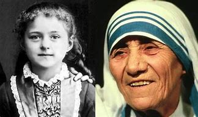

MOTHER TERESA
.jpeg)
26 AUG 1910-5 SEP 1997
""The good you do today may be
Forgotten tomarrow.
Do good anyway""
Born:Anjezë Gonxhe Bojaxhiu,26 August 1910,Üsküp, Kosovo Vilayet, Ottoman Empire (present-day Skopje, North Macedonia)
Died: 5 September 1997 (aged 87)
Calcutta, West Bengal, India
Venerated in: Catholic Church
Beatified: 19 October 2003, Saint Peter's Square, Vatican City by Pope John Paul II
Canonized: 4 September 2016, Saint Peter's Square, Vatican City by Pope Francis
Major shrine: Mother House of the Missionaries of Charity, Calcutta, West Bengal, India
Feast: 5 September[1]
Patronage: World Youth Day,Missionaries of Charity,Archdiocese of Calcutta (co-patron)[2][3]
Title: Superior general
Mother Teresa Born

Mother Teresa (26 August 1910 – 5 September 1997), was an Albanian Roman Catholic nun who started the Missionaries of Charity and won the Nobel Peace Prize in 1979 for her work with people. For over forty years, she took care of needs of those without money, those who were sick, those without parents, and those dying in Calcutta (Kolkata), guided in part by the ideals of Saint Francis of Assisi. She was born in Skopje, Macedonia, and died in Calcutta.
As the Missionaries of Charity grew under Mother's leadership, they expanded their ministry to other countries. By the 1970s she had become internationally well known as an advocate for the poor and helpless, due in part to a movie and book, Something Beautiful for God by Malcolm Muggeridge. She did not think women had the right to have abortions and said "The greatest destroyer of peace is abortion because if a mother can kill her child, what is left for me to kill you and you to kill me?".
Following her death she was beatified (the first stage of sainthood) by Pope John Paul II and given the title Blessed Teresa of Calcutta. Mother Teresa was named a Saint on 4 September 2016 by his Holiness Pope at Saint Peter, Vatican. Mother Teresa recieved many awards like the Bharat Ratna in 1980 and Nobel prize in 1979 etc. She is known for serving humanity
Nobel Peace Prize
.jpeg)
In 1979, Mother Teresa received the Nobel Peace Prize "for work undertaken in the struggle to overcome poverty and distress, which also constitutes a threat to peace". She refused the conventional ceremonial banquet for laureates, asking that its $192,000 cost be given to the poor in India and saying that earthly rewards were important only if they helped her to help the world's needy. When Mother Teresa received the prize she was asked, "What can we do to promote world peace?" She answered, "Go home and love your family." Building on this theme in her Nobel lecture, she said: "Around the world, not only in the poor countries, but I found the poverty of the West so much more difficult to remove. When I pick up a person from the street, hungry, I give him a plate of rice, a piece of bread, I have satisfied. I have removed that hunger. But a person that is shut out, that feels unwanted, unloved, terrified, the person that has been thrown out from society – that poverty is so hurtable [sic] and so much, and I find that very difficult."
Declining health and death
.jpeg)
Mother Teresa had a heart attack in Rome in 1983 while she was visiting Pope John Paul II. Following a second attack in 1989, she received a pacemaker.[72] In 1991, after a bout of pneumonia in Mexico, she had additional heart problems. Although Mother Teresa offered to resign as head of the Missionaries of Charity, in a secret ballot the sisters of the congregation voted for her to stay, and she agreed to continue.
In April 1996, Mother Teresa fell, breaking her collarbone, and four months later she had malaria and heart failure. Although she underwent heart surgery, her health was clearly declining. According to Archbishop of Calcutta Henry Sebastian D'Souza, he ordered a priest to perform an exorcism (with her permission) when she was first hospitalised with cardiac problems because he thought she might be under attack by the devil. On 13 March 1997, Mother Teresa resigned as head of the Missionaries of Charity. She died on 5 September.